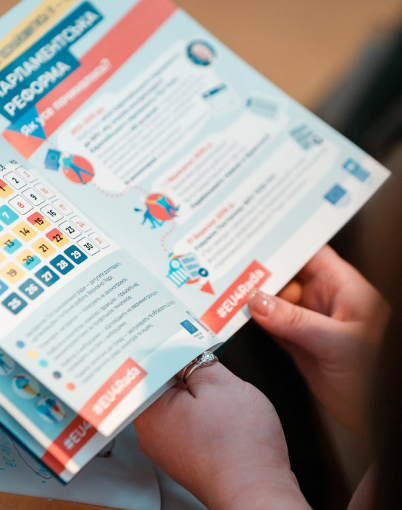

Привіт!
Долучайся до освітньої подорожі в український парламент для школярів, студентів та вчителів! Ти дізнаєшся про те, як працює, яку роль виконує та для чого країні Верховна Рада.
ВивчайПривіт!2
Долучайся до освітньої подорожі в український парламент для школярів, студентів та вчителів! Ти дізнаєшся про те, як працює, яку роль виконує та для чого країні Верховна Рада. Долучайся до освітньої подорожі в український парламент для школярів, студентів та вчителів! Ти дізнаєшся про те, як працює, яку роль виконує та для чого країні Верховна Рада.
ВивчайПривіт!3
Долучайся до освітньої подорожі в український парламент для школярів, студентів та вчителів! Ти дізнаєшся про те, як працює, яку роль виконує та для чого країні Верховна Рада. Долучайся до освітньої подорожі в український парламент для школярів, студентів та вчителів! Ти дізнаєшся про те, як працює, яку роль виконує та для чого країні Верховна Рада. Долучайся до освітньої подорожі в український парламент для школярів, студентів та вчителів! Ти дізнаєшся про те, як працює, яку роль виконує та для чого країні Верховна Рада.
Вивчай-


Про Парламент Go
Парламент Go – освітня програма амбасадорів для школярів, вчителів та студентів вишів. Участь у ній відкриває двері в заплутаний і цікавий світ роботи Верховної Ради. Це можливість не тільки навчатися, а й грати, створювати та попрактикуватися в ролі депутата!
Докладніше -


Матеріали
Матеріали для амбасадорів наблизять вас до розуміння процесів, що відбуваються у Верховній Раді. Тут як навчальні матеріали для учнів та вчителів, так і цікаві вікторини, захопливі симуляційні ігри та програми тижня парламенту.
Докладніше